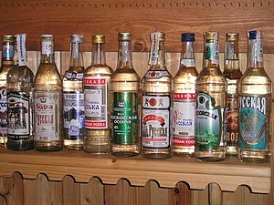

Что такое водка и ее история . Терминология хлебного вина .

К хлебному вину с самого начала его возникновения и производства, вплоть до 60-х годов XIX века и даже несколькими десятилетиями позднее, неизменно применяли термин «вино», так же как и к виноградному, но он имел иные определения-эпитеты, чем виноградное, а также обладал и целым рядом дополнительных значений, не включающих слово «вино». Таким образом, за период с XV до XIX века бытовало несколько значений термина «хлебное вино», которые, по существу, были равнозначны понятию «водка», хотя сам термин «водка» возник гораздо позднее. Чтобы идентифицировать водку в разные исторические периоды её существования, необходимо знать все те термины или «клички», под которыми она появлялась на протяжении нескольких веков, причём весьма часто несколько разных наименований водки бытовало одновременно в одну и ту же эпоху.
Обычно в контексте любого источника, литературного памятника или торгового и фискального документа сравнительно легко отличить, о каком вине идёт речь — виноградном или хлебном. На это могут указывать различные побочные признаки — характер применения, цена, объём, тара и т. п. Но вне контекста или же в контексте, лишённом дополнительных описательных признаков, для современного человека крайне затруднительно ориентироваться в исторически исчезнувших терминах виноделия и винокурения, а тем более точно знать, что означает каждый термин и к какому времени он примерно относится. Вот почему крайне важно дать обзор винно-водочной терминологии в хронологическом порядке, приводя наряду с терминами «водка», «хлебное вино» также другие, данные в ту же эпоху виноградным винам, чтобы исключить смешение и путаницу между двумя этими категориями. Наряду с терминами торгового и бытового обихода мы приведем отдельно другую систему винно-водочных терминов, относящихся к степени их промышленной (производственной) обработки.
Таким образом, зная обе системы, можно получить достаточно полное представление и об эволюции наименований водки за несколько веков, и о фактическом изменении состава, качества, и о различиях в технологии её изготовления в разные эпохи.
1. Термины виноградного вина в XV — XVIII веках
В первой части данной работы упомянуто, что термин «вино» в русском языке, как и в церковно-славянском, явился прямым заимствованием с латинского и был введён в наш бытовой язык после перевода Евангелия — в конце IX века. С появлением в XV веке хлебного вина усложняется и детализируется также и терминология виноградных вин. К существующим до XV века терминам «оцьтно вино» (кислое, сухое) и «осмирьнено вино» (десертное, сладкое) прибавляются термины, подразделяющие виноградные вина по внешним, цветовым признакам: «вино красное» (1423 г.) и «вино белое» (1534 г.), а наряду со старым термином «вино церковное» с XVI века появляется термин «вино служебное» (1592 г.). В том же веке виноградные вина стали подразделять и по степени выдержки. Так, вино ветхое означало выдержанное, старое, марочное, а вино ординарное стали называть вино нерастворенное (1526 — 1542 гг.), чтобы отличать его от вина, непосредственно подаваемого к столу и потому, по греческому обычаю, растворяемого, разводимого водой.
С середины XVI века, а особенно с XVII века, когда возникает впервые русское виноделие[99], все виноградные вина чаще всего называют по стране происхождения, а греческие и затем французские вина — по маркам, то есть по локальному месту происхождения.
Так, «фряжские вина» означают французские, итальянские и генуэзско-крымские (до 1476 г.). «Вино угорское» означает, как правило, разные сорта токайского. «Вино ренское» (1680 г.) — это мозельские вина. А вина греческие и малоазийские встречаются исключительно под локальными названиями: «косское», «бастро» (1550-1570 гг.), «мальвазия» (1509-1520 гг.), «кипрское».
Французские вина также с конца XV по XVI век различают по маркам, например, «романе» (Романе-Конти, бургонское), «мушкатель» (1550 г.). В XVII веке появляются и испанские вина: «херес», «марсала», «малага», «мадера».
С 1731 года натуральные вина стали обязательно называть виноградными в добавление к прочим терминам, особенно при их официальном упоминании в торговле: «виноградное красное вино», «виноградное белое вино», «виноградное вино малага» и т.д. Именно с этого времени, в связи с детализацией и уточнением терминологии виноградных вин, начинают широко применять и термин «водка» для обозначения отличных от вин крепких и чисто спиртных напитков. Так, арманьяк и коньяк с 1731 года называют сортами французской водки, российскую фруктовую водку — кизлярской водкой.
2. Основные торговые и бытовые термины хлебного вина в XV — XIX веках
1. «Хлебное вино» (1653 г.). Этот термин известен в литературе уже со второй половины XVII века как наиболее общий для обозначения водки или хлебного спирта. Но официально такой термин не применяли. Термин «хлебное вино» упоминают без всякого определения. Во всех торговых, административных, юридических документах с 1659 по 1765 год употреблено только слово «вино», без иных определений. С 1765 года вводено обязательное уточнение степени очистки хлебного спирта при его официальном упоминании, что наряду с введением с 1731 года точной терминологии виноградных вин даёт возможность совершенно чётко различать с середины XVIII века водку и вино. До тех пор в неофициальных случаях, в быту, литературных произведениях и в торговле, особенно розничной, применяли различные термины, отличающие именно хлебное вино и являвшиеся либо эквивалентом, либо заменой самого определения «хлебное», либо эвфемизмом или метонимией, либо, наконец, со второй половины XVIII века, прямым указанием на степень облагороженности товара.
Вместе с тем до 1649 года и частично вплоть до 1765 года продолжали бытовать термины «хлебного вина» наиболее древнего происхождения, закрепившиеся исключительно в быту простонародья или в древних актах. Древнейшие из этих терминов — «варёное вино», «корчма», «горящее вино».
2. «Варёное вино» и «перевар». «Варёное вино» — один из первых, а может быть, самый первый из терминов, связанных с производством водки. Его древность подтверждена документом конца XIV века (1399 г.) — «пьюще вареное вино». Но главное, что по своему значению термин «варёное вино» создан по аналогии с терминами «варёный мёд» и «варёное пиво». Близок к этому и исчезнувший термин «перевар» (существовал с середины XIV в. и исчез в начале XVI в.), означавший крепкий напиток, приготовленный путём варки готового варёного мёда невысокого качества с готовым пивом. По-видимому, перевар — непрямой, параллельный предшественник водки, варёного вина, и именно перевар как эрзац доброкачественного мёда использовали в событиях у реки Пьяной (1377 г.) и при взятии Москвы Тохтамышем (1382 г.).
Эта механическая смесь двух различных спиртных напитков подала идею усиления дурманящего действия варёного мёда путём варки с ним готового алкогольного продукта, содержащего солод и хлеб (зерно). Создающееся при механической смеси этих двух начал усиление концентрации сивушных масел в напитке и вызванное этим резкое дурманящее действие перевара было приписано исключительно хлебному компоненту, что и побудило использовать в дальнейшем для винокурения в качестве сырья исключительно хлеб. Это объяснение возникновения водки наиболее полно совмещает и наиболее верно интерпретирует все имеющиеся по этому вопросу «противоречивые» факты, так что «противоречие» исчезает.
Как новое, дешёвое и сильнодействующее средство «перевар» в качестве самостоятельного товара упомянут в договоре Москвы с Литвой в 1470 году, а последний раз — в официальном документе в 1495 году. Затем он был полностью вытеснен из производства (не позднее 1530 г.) и заменён варёным вином, что несомненно является одним из первых, а возможно, самым первым официальным термином водки. Возможно, что варёным вином определённое время именовали и сам перевар, так что термин «варёное вино» не обладает достаточно чётким смыслом. В то же время преемственность терминов между старым производством (варёный мёд), переходным, промежуточным видом производства (перевар) и новым производством — винокурением (варёное вино) всё же очевидна. Она убедительно говорит в пользу того, что «варёное вино» — первый по времени термин водки, когда сам процесс винокурения (или точнее — виносидения) ещё не осознавали как качественно и технически новый.
3. «Корчма». Один из древнейших официальных и полуофициальных терминов водки, существовавший почти одновременно с термином «варёное вино», но переживший его почти на четыре столетия. Корчмой вначале обозначали водку домашнего производства в своём хозяйстве для личного потребления и для угощения гостей, соседей (отсюда и сам термин, совпадающий с «гощением»), а затем, с момента введения монополии на водку в XV веке, термином «корчма» обозначали водку незаконного производства, то есть то, что ныне именуют самогоном, — водка, запрещённая к производству и продаже, произведённая помимо и в нарушение государственной монополии.
Надо сказать, что термин «корчма» в таком значении древнее водки и применяем ещё до изобретения водки в том же значении к мёду, пиву и даже к квасу (позднее, в XVIII в.), когда речь шла о незаконной продаже любого из этих напитков. Так, уже в 1397 году в одном из городских постановлений по Пскову сказано, что горожанам (без разрешения) «корчмы не держать, бочкой меду не продавать», то есть продажу, а следовательно, и производство ограничивали, хотя и не в стеснительных масштабах[100]. В 1474 году ещё более определённое указание: «Во Псков корчмы не возити, ни торговати»[101]. В данном случае корчма — несомненно водка, ибо под 1471 годом читаем: «Бысть в Новегороде всякого блага обильно и хлеб дёшев»[102].
В «Судебнике» Иоанна IV и в Уложении 1649 года «корчемство» уже совершенно чётко определено как незаконное, тайное производство и продажа водки. Этот же термин остался в том же значении на весь XVIII век[103], а 25 декабря 1751 г. был даже принят специальный Корчемный устав, дополняемый поправками до 1785 года (о том, кто корчмы содержит и вином шинкует), о «смотрении» на заставах корчемного вина, о запрещении французского вина в вольных домах продавать, о заклеймении клубов, об искоренении корчемств в Москве и С.-Петербурге[104].
Как видно из этих примеров, в XVIII спиртных напитков, а не только водки. Но для XV — XVI веков, и даже для первой половины XVII века термины «корчма», «корчемное вино» были связаны исключительно с водкой. Так, в псковском договоре с Ганзой конца XV века указано, что немецкие купцы не могут ввозить в Псков «пиво и корчму», что косвенно говорит не только о совпадении термина «корчма» по значению с водкой, но и подтверждает наше предположение о введении монополии винной торговли уже в середине 70-х годов XV века.
4. «Куреное вино». Этот термин впервые встречается в «Уставе» Иосифа Волоцкого в 1479 году и, по всей вероятности, хронологически следует за двумя предыдущими[105]. Известно также упоминание и в XVII веке, в 1632 году, но, по-видимому, во второй половине XVII века этот термин уже не употребляли, что вполне понятно, так как он отмечал лишь технические особенности нового производства — винокурения, а не потребительские признаки водки. Вероятнее всего под этим термином водка была известна прежде всего узкому кругу её производителей, хранителей (сторожей), полицейско-административному и фискальному аппарату. Именно поэтому термин, как отмечающий исключительно технологический признак, долго не удержался.
5. «Горячее вино» (1653 г.), «горючее», «горящее», «горелое», «жжёное вино» (1672 г.). Термины чрезвычайно распространённые в XVII веке, а также сохранившиеся на протяжении XVIII века и отчасти дошедшие до XIX и даже до XX века (в государственных законах — официально — в виде терминов «горячительные», «горячие напитки»)[106]. Несмотря на широту распространения, длительность употребления, термин самый неустойчивый и самый искажаемый. Правильнее всего «горящее вино», то есть то, которое обладает способностью гореть, выгорать, а не «горячее», то есть обладающее высокой температурой, и тем более не «горелое».
Этот термин, по существу, общеевропейский, так как был принят во всех германоязычных странах как официальное название хлебного вина — водки: «брантвайн» («Brandtwein»). Этот термин в украинском языке стал основным официальным названием водки — «горiлка», а в польском — одним из двух основных: «gorzalka»[107] и «wodka»[108]. «Горзалку» употребляют в бытовом польском языке постоянно и гораздо чаще, чем «водку», но последняя обычно преобладает на этикетках и в рекламе.
В русском языке, однако, термин «горящее вино» не превратился ни в преобладающий, ни в основной, несмотря на свою распространённость в XVII — XVIII веках, и в конечном счёте так и не закрепился в народном сознании и в языке, что вполне понятно, если учесть ту его неустойчивость в формулировке, которая существовала даже в период наибольшего употребления этого термина. Причина этого незакреплёния кроется прежде всего в непонимании народом существа данного термина и в различном его толковании разными группами населения, отчего он не смог стать в России всеобщим, единым, общенациональным, как на Украине, где существовало единое объяснение и, следовательно, было и могло быть лишь единственное понимание слова «горилка», что означает «пылающая» (от «горити» — пылать), то есть «горящее вино», или жидкость, способная гореть. Сбиться там на «горячее» или «горелое», как в русском языке, было невозможно, поскольку эти слова в украинском имеют другие корни. В русском же языке из-за близости и даже совпадения корней термин потерял свой основной смысл и потому не закрепился. Кроме того, он был занесён извне, по своему характеру был чужим, инородным, переводным, не русским. Русские более склонны отмечать в явлениях, в продуктах не один из их физических (технических) признаков (в данном случае — способность к горению), а либо особенности сырья, из которого сделана водка (и любой иной продукт), либо особенности технологии её производства, либо, наконец, места происхождения.
Последнее было особенно свойственно именно русской психологии (русские 300 лет говорили: «французская водка» вместо «коньяк») и остаётся важным определяющим моментом и по сегодняшний день. Мы охотно говорим «датский сыр», «финская бумага», «югославский» или «румынский чернослив», «венгерские куры», вместо «эдам», «верже», «ренклод», «леггорн», как сказал бы француз или немец, ибо нам сразу понятно, ясно при этом, откуда этот товар и что он собой представляет, в то время как для западного европейца показательны лишь порода, марка, фирменное наименование. Точно так же русский человек XV — XVII веков охотно говорил «русское вино», «черкасское вино», «фряжское вино» и при этом прекрасно понимал, что первые два термина относятся к водке, а третий к виноградному вину, хотя грамматически между этими терминами не было различия.
6. «Русское вино». Этот термин возник во второй половине XVII века, в источниках он отмечен с 1667 года. В быту он встречался сравнительно редко, но зато фигурировал в официальных внешнеторговых документах. Он отражает ясное осознание тогдашними производителями водки её национальной особенности (вкусовая и качественная неповторимость, особые свойства по сравнению с другими видами этого же товара — «лифляндским вином», «черкасским вином»).
7. «Лифляндское вино» (1672 г.). Термин бытовал в XVII веке в землях, прилегающих к Прибалтике, в Пскове и Новгороде. Им обозначалось привозное хлебное вино из Эстонии (Юрьева — Дерпта — Тарту) и Риги.
8. «Черкасское вино» (1667 г.). Этот термин хотя также носит внешнеторговое происхождение, но получил широкое распространение не только в приграничных с Украиной районах, но и во внутренних русских областях, а также в самой Москве. Черкасским вином называли в России украинскую водку — горилку, изготовленную из пшеницы, в отличие от русской водки, производимой либо целиком из ржи, либо пополам из ржи и овса с ячменём, либо из ржи, но с добавками пшеницы. Черкасское вино, или горилку, привозили из Запорожской Сечи, и получило своё наименование по городу Черкассы и по черкасским казакам (так до 1654 года именовали всех украинцев), которые во второй половине XVI века стали вывозить через Московское государство свою водку-горилку для реэкспорта в северо-восточную Россию. Черкасская водка была хуже по качеству, иногда очень плохо очищена, порой совсем не очищена, а потому была дёшева, ибо ценилась значительно ниже московской, русской, поэтому значительную часть её перекупали предприимчивые русские купцы и продавали в кабаках России, в то время как настоящую московскую, русскую водку вывозили за границу на Запад или подавали к столу господствующих классов. Причины плохого качества черкасской водки-горилки коренились в её украинско-польской технологии, не знавшей целого ряда очистительных процессов, применяемых только в России[109]. Кроме того, сказывались и различия в сырье, что отражалось на вкусовых свойствах водки. В русском обиходе термин «черкасское вино» удержался вплоть до Крымской войны 1853-1856 годов, после которой вообще доступ украинской (с 1861 г. — картофельной) водки был прекращён на рынки центральных областей.
9. «Оржаное винцо», «житное вино» (т.е. ржаное вино). Эти термины отражают тот исторический факт, что вплоть до 40 — 60-х годов XVIII века, то есть на протяжении трёх веков, в России выкуривали хлебное вино исключительно из ржи, а с середины XVIII до середины XIX века, то есть ещё на протяжении столетия, рожь продолжала составлять в среднем не менее половины сырьевой основы для русской водки. Лишь с середины XIX века Россия постепенно переходит на использование пшеницы и картофеля для производства водки, однако зерновая основа остаётся преобладающей вплоть до 1917 года.
10. «Зельено вино», «зелено-вино», «хмельное вино», «зелье пагубное». Эта группа терминов встречается на протяжении трёх-четырех столетий главным образом в бытовом языке, в художественной литературе, фольклоре, сказках. Однако они имеют вполне реальную основу и означают любой вид хлебного вина любого качества, но сдобренного пряными, ароматическими или горькими травами, чаще всего хмелем, полынью, анисом, перцем или их сочетаниями. Правильное название водки термином этой группы «зельено-вино» (от «зелье» — «трава» по церковно-славянски), то есть водка, настоенная на травах или, точнее, перегнанная с травами. Иногда такая водка могла иметь слегка зеленоватый оттенок, но при хорошем качестве она должна быть бесцветна. Поэтому нельзя производить этот термин от слова «зелень» и понимать его как «зелёное вино». Между тем именно эта ошибка наиболее часто распространена.
11. «Горькое вино». Этот термин, впервые отмеченный в 1548 году и затем появившийся вновь в 1787 году, получил наибольшее распространение во второй половине XIX — начале XX века как эквивалент водки. По своему значению он примыкает к предыдущему и означает водку, перегнанную с горьковатыми травами (полынью, почками берёзы, дуба, ивы, ольхи и т.д.). Однако это первоначальное значение полностью было утрачено в конце XIX века, и термин переосмыслен как обладающий переносным смыслом — «горькая», то есть напиток, приносящий горькую, несчастную жизнь или тот, который пьют с горя. «Пить горькую» стало означать запить надолго, безнадёжно. Поэтому термин применяем ныне лишь в литературном обрамлении (как метонимия), а не как деловое обозначение водки.
3. Эвфемистические, метонимические и жаргонные термины хлебного вина в XVIII — XIX веках
Возникновение определений, заменяющих официальные или обычные распространённые термины хлебного вина, относится в основном к XVIII — XIX векам. Из эпохи старой, допетровской Руси к таким терминам можно отнести лишь «зелено вино», которое именно в XVIII — XIX веках приобрело свой эвфемистический смысл, но вовсе не имело его ни в XVI, ни в XVII веке.
Эвфемизмы (т.е. стремление придать неприличному слову или понятию благовидное название) вообще крайне характерны для эпохи XIX века в связи с появлением и развитием нового социального слоя — мещанства, в то время как метонимии (переименование, замена какого-либо понятия иным словом, имеющим причинную связь с основным словом-понятием) более характерны для XVIII века с его общими тенденциями к культивированию классицизма. Что же касается жаргонных выражений, то они в основном распространяются в русском языке с середины XIX века и во всяком случае лишь после Отечественной войны 1812 года. В целом же все вышеуказанные формы замены основных, официальных и, так сказать, «нормальных» терминов хлебного вина возникают в связи с развитием капиталистических отношений ещё в XVIII веке и отражают тенденцию утраты хлебным вином его стандартности в связи с изменением правительственной политики в отношении винокурения: ликвидацией исключительности государственной монополии на производство водки, предоставлением права винокурения дворянству в целом как сословию и введением многочисленных льгот, исключений, поощрений или запретов для ряда других социальных категорий в России. Всё это создало известный хаос в винокуренном производстве, что немедленно отразилось на утрате водкой общероссийского стандарта и привело к появлению в стране хлебного вина самого разнообразного (разнокалиберного) качества. Этот процесс хорошо иллюстрируется следующими фактами.
Если с 1649 по 1716 год формально официальный порядок винокурения не изменяли, то с 1716 по 1765 год (за 50 лет) было издано 15 новых постановлений о производстве винокурения и хлебном вине, а за период с 1765 по 1785 год (т.е. всего за 20 лет правления Екатерины II) — 37 постановлений. Последний Указ «О дозволенном всегдашнем винокурении дворянам», являвшийся полным отказом от государственного производства водки и от государственного контроля за её производством частными производителями, был принят 16 февраля 1786 года. Он как бы завершал мощным аккордом тот процесс децентрализации водочного производства в России, который был отличительной чертой XVIII века и который был начат ещё при Петре I как мера по разрядке внутреннего социального напряжения. Эта мера нанесла в целом огромный ущерб России, русскому народу, который именно через эвфемическую и жаргонную терминологию отразил своё отрицательное отношение к той «водочной свободе», коей «просвещённые монархи» пытались обеспечить внутренний порядок в России, особенно после таких «социальных взрывов», как восстание И. Булавина (1708 г.) и крестьянская война Е. Пугачева (1774-1775 гг.). Все эти термины не только имеют историко-социальное значение, но и важны для нашего исследования, потому что они объясняют и проясняют появление и упрочение термина «водка», сменившего термин «вино». Именно в XVIII веке водку всё чаще перестают называть вином, не называя ещё официально водкой, но заменяя официальное название вина (что также является чистым эвфемизмом) жаргонными синонимами, причём преимущественно явно непочтительного свойства. Так, уже в начале XVIII века, в первом его десятилетии и в середине второго, появляются следующие термины водки.
1. «Царская мадера». Это эвфемизм с довольно прозрачной иронией, ясной для людей петровского времени. Этот термин является прямым намеком на устраиваемые Петром I «ассамблеи», или общественные развлекательные сборища, где дворяне и купцы могли присутствовать с одинаковым правом и где «провинившимся» предписывалось выпивать огромные кубки крепких (креплёных) вин — хереса, мадеры, портвейна, вызывавших быстрое и сильное опьянение. Для народа же ухудшившаяся в петровское время по качеству водка была, по существу, заменой господской «мадеры», ибо водку простолюдины получали бесплатно, по царскому распоряжению (одна чарка в день всем петербургским строительным, дорожным рабочим, рабочим верфей, портовым грузчикам, матросам и солдатам). Таким образом, термин «царская мадера» означал: отечественная, русская, низкосортная дешёвая дармовая водка, изготовленная при царском кабаке и выдаваемая на манер господской «мадеры» от царского имени для простого люда.
2. «Французская 14-го класса». Это название водки было широко распространено среди чиновничества не только в XVIII веке, но в основном позднее, в XIX веке, хотя и возникло оно именно в начале XVIII века как иронический намёк на петровскую табель о рангах (14-й класс — низшая категория чиновника — коллежский регистратор). Этот термин прямо отражал чрезвычайно низкое качество водки в царских кабаках в это время, разбавляемой водой, настоенной на табаке.
3. «Петровская водка». В этом термине точно указано и время его возникновения, и оценка качества тогдашнего хлебного вина. Для современного читателя здесь никакой иронии не чувствуется. На самом же деле и слово «петровская», то есть не старинное, доброе «зелено-вино», а новое, петровских времён — «водичка», «водчонка», «водка», то есть не хлебное вино, а просто-напросто «петровская вода», даже не «вода», а «водка» (уничижительное от «вода»).
Таким образом, исторически термин «петровская водка» хотя и существовал в России, но обозначал низкое качество хлебного вина. Вот почему неправильно и даже неразумно брать это название теперь для использования на этикетках так называемых старых водок. Слово «петровская» свидетельствует вовсе не о «старинности», а, наоборот, о новом, более молодом производстве по сравнению с водками XVI — XVII веков, и притом о плохом качестве изделия[110].
4. «Огонь да вода». Термин второй половины XVIII века, типичный эвфемизм. Носит позитивный характер. Употребляем в среде провинциального мелкопоместного дворянства, среди чиновничества для характеристики хороших, очищенных сортов водки частного производства. Однако этот термин носил узкобытовой характер. Его можно рекомендовать для введения в рекламно-торговый оборот как название одной из марок водки хорошего качества. Исторически в нём также содержится приближение к термину «водка», дается указание на две составные части водки: спирт (огонь) и воду.
5. «Хлебная слеза». Термин преимущественно второй четверти XIX века, эвфемизм с явно позитивным оттенком. Употребляем для определения водок исключительного, отличного качества частного производства. В XIX веке, особенно в его второй половине, бытовал в мещанской, мелкочиновничьей среде просто как эвфемизм любой водки, лишившись своего первоначального терминологического значения. Термин может быть рекомендован для возобновления как название водки высшего качества и особого технологического режима (тихого погона) или водки с использованием особо высококачественного зернового сырья.
6. «Сивак», «сивуха». Термины, дающие варианты мужского и женского рода у существительного, обозначающего алкогольный напиток, что отражает неустойчивость или двойственность основного понятия: вино или водка? Эти термины относились обычно к водке крайне низкого качества или к совсем неочищенной, мутной или сероватой (сивой) по цвету. Жаргон конца XVIII — XIX века.
7. «Перегар». Жаргонный термин первой половины XIX века, относящийся к жидкому, плохому хлебному вину последней фракции гонки с пригарью или иным сильным неприятным запахом. Термин произошёл от искажения технического термина (см. ниже — промышленные и технические термины) хлебного вина и дошёл до нашего времени с крайне расплывчатым значением вообще всякой водки низкого качества.
8. «Брандахлыст» (точнее — брандахлест). Термин жаргонный, середины второй половины XIX века. В основе его немецкое название водки — брантвайн. Им обозначалась преимущественно водка низкого качества — картофельная, поступавшая по более дешёвой цене из западных губерний России — Польши, Прибалтики, отчасти из Украины и Белоруссии (Волыни). В конце XIX века терминологическое значение этого названия было полностью утрачено. Так стали называть всякую водку низкого качества независимо от места производства, но всё же это обозначение больше всего относилось к картофельной и свекольной дешёвой водке, появившейся до 1896 года и кое-где в центральных районах России. Термин ясно указывает на отрицательные последствия, вызываемые немецкой (т.е. преимущественно польской) водкой: «хлыст» — искажённое от «хлестать», то есть вызывать рвоту, рвать.
9. «Самогон», «самогонка». Термины, традиционно дающие мужское и женское соответствия алкогольному напитку, но хронологически выходящие за пределы исследуемого периода и относящиеся к началу XX века. Они появились после 1896 года и означали самовольно, незаконно изготовленное хлебное вино, запрещённое к выкурке после введения государственной монополии 1894-1902 годов на водку. Одновременно термин «самогон» означал в целом неочищенное, плохое хлебное вино (с вариациями «хороший самогон», «плохой самогон»), стоящее по качеству неизмеримо ниже государственной, монопольной водки. Следует отметить, что термин этот жаргонный, крайне безграмотный, что указывает на появление его в самой низкой, некультурной среде. В русском языке не было до начала XX века слова «самогон» в указанном выше значении. Но само слово существовало и имело два специальных значения: 1) в областном промысловом языке Сибири «самогон» означал добычу зверя погоней на лыжах в отличие от гона на лошади и с собакой; 2) в специальном винодельческом языке «самогон» — это лучшие, первые фракции вина, из которых приготавливают наиболее высококачественные, изысканные вина, то есть та часть виноградного вина, которая не смешана с сильно или вторично отжатыми из винограда фракциями, а идёт самотеком, первой, от лёгкого отжима.
Как видно, термин «самогон», относящийся к водке, не мог быть заимствован ни из винодельческого лексикона, ни из народного сибирского. Он и появился в южных и юго-восточных губерниях России, на стыке с Украиной и Заволжьем, то есть в областях со смешанным нерусским или полурусским населением, где всегда чувство языка, чистоты его определений и значений было ослаблено.
10. «Монополька». Жаргонное название, утвердившееся за водкой с 1894 по 1896 год и бытовавшее до 1917 года, но привившееся быстро и крайне прочно, так что это название употребляли даже вплоть до середины 30-х годов XX века, в советское время. Характерная особенность этого термина — чёткое закреплёние за основным алкогольным русским напитком женского рода, что знаменовало собой полную победу термина «водка» и окончательное вытеснение им на рубеже XIX — XX веков старого термина водки — «вино».
4. Производственные (промышленные, технические) термины хлебного вина (водки), указывающие степень качественного совершенства продукта
7. «Рака». Термин турецкого происхождения — «raky» («спиртное») от арабского «aragy» («финиковая водка»). В русской терминологии «рака» означает первую выгонку, или первый гон хлебного вина из барды в заторном чане, которая продолжается до тех пор, пока технически возможно вести перегонку, не допуская исчезновения из барды жидкости до такой степени, чтобы гуща барды подгорела. «Рака» — это, следовательно, краткий, технический и производственный термин, заимствованный вместе с самим производством спирта, или, точнее, вместе с техникой перегонки.
В русских средневековых источниках этот термин иногда переводят по-русски словами «вонючая водка». И его следует считать одним из первейших истоков для обозначения всего продукта словом «водка». Термин «рака» в византийских источниках встречается ещё в III веке и позднее — в VIII — Х веках. Он был заимствован в России из Византии либо непосредственно, либо через Болгарию и Молдавию, где ракой называют всякую фруктовую водку, продукт перегонки фруктового (ягодного) вина или фруктово-ягодной гущи (смеси).
То, что термин, обозначавший в Малой Азии, Греции, Болгарии, Валахии, Молдавии, Сербии, а из земель восточных славян — в Белоруссии[111] конечный, завершённый, хорошего качества продукт, стали использовать в России для названия самой грубой стадии полуфабриката, объяснимо тем, что его первоначальное толкование принадлежало монахам. В греческом тексте Евангелия слово «рака» употреблено в резко отрицательном смысле, вследствие чего и получило соответственно отрицательное толкование в целом (независимо от контекста) у русских переводчиков, затруднявшихся найти эквивалент слова «рака» в русском языке и потому истолковавших его в переносном смысле как «пустой человек» (точнее, тот человек, который употребляет раку, — пьяница, а следовательно, пустой). В Церковном словаре конца XVIII века слово «рака» толкуют как «безмозглый человек», лишённый разума, достойный оплевания, то есть дан целый набор отрицательных определений для этого понятия — не просто пьяного, а чересчур пьяного человека, что, вероятно, соответствовало различию в опьянении старинными напитками (мёдом, олом) и новыми (хлебным вином; ракой).
Вполне понятно, что русское винокурение, не имевшее своей терминологии, при освоении византийских технических приёмов (быть может, аппаратура для дистилляции была завезена вместе с Софьей Палеолог или была привезена бежавшими из Константинополя в 1453 г. византийскими монахами) использовало этот евангельский термин в его русском понимании, ставшем привычным за пять веков, для обозначения первой, наиболее грубой фракции хлебного вина. Ведь именно при опробовании этой фракции наступало опьянение с тяжёлыми, отвратительными последствиями. Так что именование грубого полуфабриката ракой, то есть определение его как опасной и пустой, негодной ещё к употреблению фракции, вполне логично.
Но самое интересное в этом факте заключено в том, что само по себе применение евангельской терминологии для обозначения столь «богопротивного» занятия, как винокурение, довольно определённо и убедительно говорит о том, что винокурение, несомненно, зародилось в России, как и в Западной Европе, первоначально в монастырской среде. Но в то время как в католической Европе эта отрасль производства надолго оставалась в руках церкви, в России она почти сразу же, уже в конце XV, а тем более в начале XVI века, при Иване IV Грозном, была целиком или почти целиком сконцентрирована в руках светской власти, в руках монархии, государства, казны и монополизирована ею. В начале XVII века у церкви были отняты и её привилегии на производство водки для своих, внутренних нужд, что указывало на решимость светской власти не давать или не оставлять в руках церкви этого мощного и опасного источника финансового и социального влияния. В XVIII же веке последовал новый удар по церкви в этом отношении — предоставление преимущественных прав на винокурение исключительно дворянству, изъятие из монастырей винокуренного медного оборудования (труб, змеевиков, кубов) под предлогом использования их на военные цели. Тем самым церковь отделена от «водки», что явилось одной из характерных черт русского исторического развития. Это определило и в целом отрицательное отношение церкви к «дьявольскому зелью», и чёткое разделение «сфер влияния» между церковью и светской властью: первая получала возможность влиять лишь на «душу» народа, вторая целиком оставляла за собой влияние на «тело» народа. Одиноким памятником первоначальной причастности церкви к созданию винокуренного производства в России осталось лишь слово «рака», да и то лишь до определённого исторического рубежа — до XIX века. Впоследствии, особенно во второй половине XIX века, термин «рака» стали заменять чисто техническим, современным термином «первый гон». Это изменение в терминологии знаменовало собой полный переход винокурения в руки русской промышленной буржуазии, разрыв со средневековыми патриархальными традициями в винокурении.
2. «Простое вино». Этот термин, введённый официально Уложением 1649 года, обозначал хлебный спирт однократной перегонки из раки или фактически вторую перегонку первично заброженного затора. Простое вино было основным, базовым полуфабрикатом, из которого получали самый обычный, широко распространённый вид хлебного вина, так называемый полугар, а также все другие марки водок и хлебного спирта в России.
3. «Полугар». Этот термин на производственном языке означал не спирт, полученный путём перегонки раки, а простое вино, разбавленное на одну четверть чистой холодной водой (на три ведра простого вина добавляли одно ведро воды). Полученная смесь и носила название полугара. Оно произошло от того, что после составления смеси обычно следовала техническая проба качества «вина», которое наливали в особый металлический цилиндр или кастрюльку-отжигательницу (около 0, 5 л) и поджигали. По окончании горения остаток вливали в особый металлический стакан, имевший ровно половину объёма отжигательницы. Если вино было стандартно по качеству, то есть было не фальсифицировано, то оно точно заполняло стакан доверху и считалось пригодным для употребления. Простота этой технической пробы имела крайне важное значение для поддержания единого качества (стандарта) водки во всем государстве, ибо каждый «питух», то есть потребитель, имел возможность произвести проверку купленной им порции. Это практически вело к ликвидации фальсификации полугара, отчего этот относительно слабый вид хлебного вина получил особо широкое распространение уже в XVI — XVII веках.
Популярность полугара и особенно связанной с его получением технической пробы оказала воздействие на бытовую терминологию хлебного вина, о которой мы упоминали выше, на все названия водки — горящее, горючее и горячее вино. На Украине же, где полугар веками оставался основной и даже единственной формой хлебного вина, это привело к закреплёнию позднее, как и за водкой, более высокого качества, единого названия — горилка. В России же уже к концу XVII века, а особенно с начала XVIII века всё более и более совершенствуют водочное производство, стремясь к более концентрированным и более очищенным формам напитка.
Поэтому уже в XIX веке слово «полугар» из технического термина превращается в жаргонный, под которым подразумевают вообще всякое нестандартное хлебное вино низкого качества. Не только простое вино, но и полугар начиная с XVIII века более требовательные потребители рассматривали не как готовый продукт, а лишь как полуфабрикат, хотя и годный к употреблению. Его официальная крепость с середины XVIII века не превышала обычно 23 — 24°, но поскольку этот вид водки не проходил специальной фильтрации, то его вкус и запах были неприятными из-за наличия сивушных масел. Их ликвидацию, очистку обычно достигали сравнительно легко, даже примитивно — путём пропускания полугара через сетчатую коробку, заполненную берёзовыми углями, сделанными из веток, толщиной в карандаш, то есть из тонких сучков березы. Именно полугар «с сучками» считался очищенным, а «без сучков» — плохим, нечистым. Искажённое воспоминание об этом сохранилось в жаргонном языке до наших дней. Вульгарно ныне называют «сучком» всякую водку низкого качества, недостаточно дистиллированную и нефильтрованную, хотя следовало бы называть её как раз наоборот — «без сучка», то есть без фильтрации, без обработки. Но народный язык любит краткость и не всегда руководствуется логикой и смыслом.
Однако практически ни полугар, ни тем более простое вино, если их не производили домашним способом, как правило, не фильтровали. Этого процесса «удостаивались» лишь более высокие сорта хлебного вина.
4. «Пенное вино», «пенник». Лучшей маркой водки, получаемой из полуфабриката «простое вино», было пенное вино, или пенник. Название это произошло не от слова «пена», как часто неправильно теперь думают, а от слова «пенка», означавшего в XVII — XVIII веках вообще понятие «лучшая, концентрированная» часть в любой жидкости. (Аналогично «сливкам» в переносном смысле: например, «сливки общества».) В древнерусском языке слово «пенка» означало, кроме того, верх, верхний слой любой жидкости. Отсюда пенками была названа в винокуренном производстве лучшая, первая фракция при перегонке из простого вина. В пенки шла четвёртая или даже пятая часть объёма простого вина, причём получаемая при очень медленном («тихом» и «тишайшем») огне. Полученная таким путём самая крепкая и более насыщенная спиртом, более легкая фракция простого вина и шла на производство пенника. С середины XIX и до начала XX века эту фракцию вместо «пенки» стали называть «перваком», а с 1902 года за ней официально был закреплён термин «первач». 100 вёдер первача, разбавленные 24 вёдрами чистой, мягкой, холодной ключевой воды, и давали пенник, или пенное вино, которое по цене было примерно одинаково с натуральным виноградным вином. Современники, описывающие пенник, подчёркивали отнюдь не его крепость, а то, что это было «доброе вино», обладающее чистотой, мягкостью и питкостью. Пенник всегда проходил фильтрование через уголь, хотя нуждался в этом менее других марок водки.
Наряду с пенником существовали и другие степени разведения водой простого вина, дававшие более слабые по крепости и более дешёвые по стоимости марки водки: они были рассчитаны на разные категории потребителей — как «по карману», так и по полу и возрасту.
5. «Двухпробное вино». Этим термином обозначали водку, полученную разведением 100 вёдер хлебного спирта 100 вёдрами воды. В простом народе такое вино считали «бабьим» вином, было в числе обычного трактирного набора в первой половине XIX века.
6. «Трёхпробное вино». Этим термином обозначали водку, получаемую при разведении 100 вёдер хлебного спирта 331/3 вёдрами воды, то есть в более концентрированной пропорции, чем полугар. Производство этого вида водки было особенно развито в первой половине XIX века. Это было обычное рядовое трактирное вино «для народа», «для мужиков».
7. «Четырёхпробное вино». Этим термином обозначали водку, получаемуюиз хлебного спирта разведением каждых его 100 вёдер 50 вёдрами воды.
8. «Двойное вино», «двоенное вино», «передвоенное вино». Этими терминами в разное время называли хлебное вино (спирт), полученное перегонкой простого вина, то есть фактически продукт третьей перегонки (рака — простое вино — двоенное вино).
Начиная с XVIII века эта стадию рассматривали обязательной для хорошего винокура, желавшего получить высококачественный продукт. В дворянском винокурении XVIII века, особенно во второй его половине, базовым полуфабрикатом становится не простое вино, а двоенное. Именно двоенный, или передвоенный, спирт послужил основой для всех экспериментов по усовершенствованию русской водки в XVIII веке. Двоение было официально признано с 1751 года нормальной и даже элементарной гарантией качества. Крепость двоенного спирта была примерно в то время в различных винокурнях на уровне 37 — 45°. При этом двоение весьма часто (почти в 50% и более случаев) вели с перегонкой добавочных пряных, ароматических компонентов или с добавлением различных адсорбентов и коагулянтов, о чём будет сказано ниже, в разделе о технических приёмах русского винокурения.
Таким образом, двоение было сложной операцией, которая вдвое усиливала не только концентрацию спирта, но и вдвое улучшала общее качество напитка за счёт его ароматизации и очистки от сивушных масел.
Как правило, именно двоенное вино наталкивало на идею разбавления его водой, поскольку достигнутая в нём концентрация спирта была слишком сильной, непривычной для воспитанных на натуральных виноградных винах дворян и духовенства. Позднее, в XIX веке, как мы видели выше, весьма решительно разводили водой и простое вино, не столько в силу его крепости, сколько в силу традиций и — главное — в силу того, что было подмечено: именно разведённые, разводнённые вина (спирты) можно легче и полнее очистить от примесей, и в первую очередь от сивушных масел. Таким образом, ещё задолго до того, как в спиртоводочное производство вторглась научная химия, оно в России достигло высокой степени технической культуры не за счёт научного знания, а за счёт исторического опыта и эмпирического соединения традиций с экспериментом.
9. «Вино с махом». Принцип разведения хлебного спирта одной и той же концентрации разными количествами воды или, наоборот, смешивания с водой разных фракций и разных погонов хлебного спирта был, как мы видели выше, основным принципом русского водочного производства, и его тенденцией было создание разных марок хлебного вина (водки) за счёт понижения (уменьшения) доли спирта в спирто-водяной, то есть водочной, смеси. Однако, наряду с этой господствовавшей в русском водочном производстве идеей, уже в середине XVII века возникла мысль использовать смеси разных погонов для усиления (увеличения) концентрации спирта в напитке и создания таким путём другого ряда марок хлебного вина, отличающегося от водок (т.е. типа виски).
Этот ряд получил полупроизводственное, полубытовое наименование «вина с махом». Самым распространённым его видом была смесь двух третей (двух вёдер) простого вина с одной третью (одним ведром) двоенного вина. Существовали и другие пропорции смесей простого и двоенного вина — от четверти и до половины объёма двоенного вина с простым. Однако эти спиртовые смеси, не содержавшие воды-разбавителя и не являвшиеся, таким образом, водками, не получили развития в России. Их отрицательным свойством, во-первых, была высокая цена, а во-вторых, они обладали более разрушительным для здоровья действием, чем чистое двоенное вино, хотя формально были слабее его. Поэтому их уже во второй половине XVII века употребляли чаще как технический, а не питьевой спирт. Так, сохранились требования царских и патриарших живописцев выдать им красок, льняного масла и «вина с махом» для работ по росписи палат и церковных помещении.
Уже в первой трети XVIII века «вино с махом» рассматривали как искажение и отклонение от нормальной линии водочного производства, и подобные смеси стали с этого времени допускать исключительно как технические, но не пищевые, ибо довольно рано было замечено, что они практически не поддаются очистке от сивушных масел никакими, даже самыми совершенными фильтрами. В то же время русское водочное производство не отказалось от создания напитка более высокой крепости, чем простое и двоенное хлебное вино, а потому пошло по пути дальнейшей ректификации спирта с последующим обязательным разбавлением этого концентрата водой. Этот путь стал основным направлением в русском производстве водки уже в 20-х годах XVIII века. С этого периода «вино с махом» не только официальные, законодательные акты рассматривали как запретное, но и сами частные производители считали arcana[112].
10. «Тройное, или троенное, вино». Так называли вторичную перегонку двоенного вина, или, по существу, четвёртую перегонку спирта. Ее стали применять со второй четверти XVIII века частные дворянские винокурни русской знати, что стало возможным с усовершенствованием винокуренной аппаратуры. Тройное вино использовали для производства тонких домашних водок, и практически троение вели всегда с добавкой растительных ароматизаторов.
В XIX веке троенное вино было применено как основа для получения лучших заводских водок домонопольного периода, например водок завода Попова, которые были известны у потребителей под именем «поповка», или «тройная поповка». Крепость тройного спирта была приблизительно 70° в неразведённом состоянии. Его-то впоследствии Д.И. Менделеев и признал классической основой для дальнейшего разведения водой до состояния водки.
11. «Четвёртое, или четверённое, вино». Чаще называли «четвертной спирт», а в XVIII — начале XIX века известно под названием «винум ректификатиссимум» (vinum rectificatissimum — спирт-ректификат). Эта пятая перегонка известна уже в самом конце XVII века, в 1696 году (получена в дворцовой царской лаборатории), но в частной практике использовали сравнительно редко — лишь для научных и лечебных целей. Крепость ректификата — 80-82° (до конца XIX в.).
Однако экспериментально уже в XVIII веке академик Т.Е. Ловиц получил технический, так называемый «безводный спирт» 96-98°.
В 60-х годах XVIII века на базе четверённого спирта были созданы настойки-ерофеичи, без добавления воды, отчего они и выделялись из класса водок в особый класс алкогольных напитков — ерофеичей (тинктур).
В то же время на основе четверённого спирта были созданы и некоторые водки двух групп: а) ароматизированные и б) сладкие, или подслащённые (так называемые тафии, или ратафии). Ратафии не только подслащивали, но и подкрашивали ягодными сиропами или иными растительными экстрактами. Как и ерофеичи, ратафии не получили широкого распространения. Уже в XIX веке они становятся редкостью. Основная причина этого — нерентабельность, высокая стоимость, большие затраты труда, необходимость мастеров высокой квалификации и особых материалов (карлука). Но не менее важным была склонность русского стола в силу ассортимента русских блюд, особенно закусок, к нейтральным, неподслащённым алкогольным напиткам типа водок.
Всё это обусловило развитие ерофеичей и ратафий — этих видов утончённых алкогольных напитков — лишь в домашних хозяйствах дворянских винокуров в эпоху расцвета крепостного права и исчезновение этих же напитков по мере развития капиталистического производства с его жёсткими требованиями рентабельности товара и с ориентацией на более широкий, массовый спрос, на более распространённые народные вкусы. Ратафии, выпускаемые промышленным путём во второй половине XIX века, в большинстве случаев представляют собой фальсифицированный продукт, совершенно лишённый их исключительно высокого качества, достигнутого в XVIII веке.
5. Выводы из обзора терминов хлебного вина
Обзор терминов хлебного вина, существовавших в России на протяжении XV — XIX веков, даёт основание прийти к следующим выводам:
1. Бросается в глаза чрезвычайное многообразие, пестрота терминов, как технических, торговых, так и, особенно, бытовых. Это, в первую очередь, отражает разнообразие качества, наличие различных марок водки, хотя формально разделение водки на марки — виды с собственными наименованиями — начинается только с эпохи империализма. Это говорит о том, что создание водки на протяжении ряда веков было постоянно развивающимся процессом, общей тенденцией которого было часто неосознанное, а иногда и целенаправленное стремление к получению усовершенствованного, идеального продукта.
2. Раскрытие содержания терминов водки наглядно показывает, что главным, основным, центральным направлением в России было создание алкогольного напитка водочного типа, то есть напитка, полученного путём разведения спирта водой. Тем самым становится понятно, почему русский тип напитка из хлебного спирта получил в конце концов наименование водки, а не родился с этим наименованием. Более того, становится ясно, что напиток с подобным названием не мог родиться сразу же, ибо это название отражает характерную черту, характерное свойство, характерный принцип композиции данного напитка, которые были получены, выкристаллизировались и сложились лишь в результате длительного развития.
В то же время вполне понятно, что как эпизодическое, частное, неосознанно сформулированное название «водка» может появляться и на весьма ранней стадии производства русского хлебного вина, даже когда современникам видится более характерным иной признак или свойство (например, горящее вино).
3. Анализ терминов показывает, что хотя в ранние эпохи, в начале производства хлебного спирта русского потребителя поражали или он фиксировал самые различные внешние, а не главные свойства или признаки этого продукта (место происхождения, физические свойства — горючее, горящее, вареное и т. д.), то для производителей водки, для тех, кто непосредственно участвовал в её производстве с самого начала главным было то, что любой прогон, любая степень перегонки требовали разведения водой, и порой в весьма больших количествах, прежде чем превратиться в готовый для потребления пищевой продукт.
4. Эта тенденция характерна лишь для русского производства и возникла с самого начала исключительно в силу византийской традиции растворять водой любой алкогольный напиток перед его потреблением. Так, например, растворяли не только греческое и итальянское виноградное вино, но и рассычивали мёд. Этот традиционный порядок разведения водой должен был быть с ещё большей необходимостью применён к новому алкогольному напитку — хлебному вину, потому что хлебное вино по своему вкусу и запаху просто настоятельно требовало разведения, особенно для русских людей, приученных к ароматным, вкусным, приятным напиткам, основанным на таком добротном натуральном сырье, как мёд, ароматические травы, ягодный сок, солод.
Можно с достаточной долей вероятности предположить, что первоначально, в XV веке и даже вплоть до XVII века, получаемый хлебный спирт разводили не просто водой, а сытой, то есть водой, слегка ароматизированной небольшим количеством мёда. В «Домострое» (середина XVI в.) содержится определённый намёк на то, что именно так поступали с хлебным вином в эту эпоху, ибо сказано, что простое вино надо не растворить, не развести водой, а «рассытить», то есть разбавить сытой — водным раствором пчелиного мёда.
Это, с одной стороны, объясняет, почему определение «водки» «запоздало» на несколько веков, отстав от фактического производства водки, ибо как-никак люди считали, что они не «разводняли», а всего лишь «рассычивали» горящее вино, а с другой стороны, не менее убедительно доказывает, что определение «водка» не случайно «выплыло» как основное именно в XVIII веке, поскольку в это время перестали «рассычивать» хлебное вино, перейдя к ароматизации и отбиванию неприятного запаха травами и пряностями, а кроме того, именно в это время поняли, что приём разводнения хлебного спирта диктуется уже не только и даже не столько византийскими традициями, сколько техническими условиями и исторически сложившимися привычками потребителя. «Вино с махом» не прижилось и не пошло в широкое производство и торговлю. Перспективной оказалась только водка, то есть спирт любой крепости, любого погона, но лишь разведённый после получения водой.
5. Таким образом, волка является русским специфическим видом алкогольного напитка на основе хлебного спирта и в силу традиционно-исторических причин, и в силу истории технического развития русского винокурения. Иными словами, водка возникла в России не случайно, ибо в этой стране исторически не могло возникнуть иного спиртного напитка, кроме водки, как в силу историко-культурных традиций, так и в силу историко-технической отсталости страны и наличия приёмов, связанных с производством питейного мёда.
6. Во всех других странах Европы (Франции, Италии, Англии, Германии, Польше) процесс создания алкогольных крепких напитков развивался по иному пути: по пути развития процесса дистилляции, то есть по пути совершенствования аппаратуры для дистилляции, всё большего увеличения крепости спирта и увеличения числа перегонок. Создателям коньяка и виски не могла бы прийти в голову шальная мысль разводить полученный путём технических усилий висококачественный, концентрированный продукт водой. Это вело бы к ликвидации результатов их усилий, их производства. На подобный путь создания спиртового напитка не наталкивало ничто: ни традиции, ни логика, ни тем более задачи получения всё более очищенного продукта, ни технический прогресс. В России, наоборот, всё толкало к тому, чтобы развести, разбавить водой полученный спирт: требования церкви, традиции, привычка к «мягким», «питким» питиям и обычай пить помногу и подолгу, так чтобы действие алкоголя проявлялось не сразу, а позднее; к этому же склоняло и первоначально низкое качество продукта, которое надо было улучшать и улучшать, а также техническое несовершенство аппаратуры, заставлявшее надеяться не на совершенство дистилляции, а на механическое улавливание примесей к спирту путём его фильтрации и на применение других приёмов очистки.
7. Чтобы ещё яснее, ещё чётче подчеркнуть нашу мысль о том, что водка, возникнув исторически закономерно, затем и столь же исторически закономерно пробила себе путь, победив все другие русские старинные национальные напитки и завоевав себе «место под солнцем» в силу того, что оказалась наиболее приемлемой и приспособленной ко всем суровым изменениям в русских экономических и социально-исторических условиях, — мы сделаем обзор ещё одной группы терминов, связанных не с самой водкой как напитком, не с её производством, а с мерами объёма жидкостей в России. Из этого обзора станет ясно, в сколь большой степени эти меры приспосабливали к водке, как они зависели от такого товара, как водка. Изменение мер жидкостей буквально позволяет проследить все этапы «наступления водки» на другие напитки и тем самым даёт возможность более точно и конкретно зафиксировать момент, когда водка превратилась в безраздельно господствующий напиток.
6. Терминология мер жидкостей в России, расположенная в хронологическом порядке по мере её возникновения и развития
Древнейшей единицей русских мер жидкости является ведро. Эта единица объёма распространена была с самого начала истории Руси на всей её территории в различных русских государствах и имела различные вариации в разных областях, которые сохранялись долгое время. Особенностью этой меры являлось то, что она была центральной единицей, отсчёт откоторой шёл в обе стороны — в сторону больших объёмов, которые подразделяли на вёдра и которые отличались друг от друга различным содержанием вёдер, так что для их характеристики существовал лишь единственный способ: выразить её в ведрах, отличить их друг от друга числом вёдер. В то же время ведро было основой, которую подразделяли на ряд более мелких единиц, особенно употребительных в быту и мелкой торговле. Эти единицы тоже можно было охарактеризовать не иначе, как сказав, какую часть ведра они составляют. Без этого их названия лишены смысла.
Таким образом, ведро, как единица меры жидкостей и сыпучих тел, занимало такое же положение, как позднее рубль занял в денежной системе.
Первые известные нам упоминания ведра относятся к концу Х века (996 — 997 гг.). Ведро в это время имеет объём от 12 до 14 л в разных областях. В ведрах исчисляют меры основного для этой поры алкогольного напитка — мёда. Варя медовая — в 60, 63 и 64 ведра (для разных областей). Иных мер этот период не знает.
Позднее, в XII веке, встречаются такие единицы объёма, как варя пивная и корчага. Варя пивная (имеет объём 110 — 112 вёдер), с которой снимали в процессе производства либо 120 вёдер густого пива, либо 220 — 240 вёдер жидкого пива. Эта мера позволяет, таким образом, понять тот термин, которым иногда обозначали жидкое пиво вплоть до XIX века — «полпиво». Полпивом его называли, следовательно, по отношению к варе (чану) XII века (ибо при разведении содержимого этого чана наполовину водой получалось полпиво), а количественно его было вдвое больше.
Корчага в XII веке (1146 г.) — это мера виноградного вина, значит, стандартная амфора вина размером в два ведра, или 25 л. Следовательно, ведро виноградного вина в XII веке имело объём 12, 5 л. С XV века, когда появляется водка, мы встречаем уже уточненные указания о том, какое ведро имеется в виду: ведро питейного мёда, ведро церковного вина, а в XVI веке впервые появляется термин «указное ведро». Это значит, что появилась водка и появилась монополия на водку.
Указное ведро равно 12 кружкам, а кружка равна 1, 1 л, а кое-где — 1, 2 л. В то же время встречается и термин «винное ведро», то есть явно водочное ведро, равное 12 кружкам, имеющим вес 35 фунтов, если мерить их кружками чистой воды. В XVII веке этот объём винного ведра остаётся, но его делят на 10 кружек, так что одна кружка XVII века имеет вес 3, 5 фунта чистой воды.
С 1621 года появляется новое название этого винного ведра — дворцовое ведро. Его же называют ещё питейной мерой, или московским ведром. Московское ведро в это время является самым маленьким по объёму ведром в России — ровно 12 л, в то время как в других областях ведро всё ещё колеблется в объёме от 12, 5 до 14 л. Нетрудно понять, что московское ведро как мера объёма водки не случайно было выбрано наименьших размеров: единица оставалась вроде бы старая, большая — ведро и брали за него ту же цену, но водки наливали гораздо меньше, чем, например, наливалось бы в тверское, 14-литровое ведро. С этих пор областные ведра быстро исчезают. Все области вводят у себя московское ведро.
Таким образом, без особых предписаний и нажима из центра московское ведро, или, как его ещё иногда называли, «ведро Сытного двора», где мерили водку, быстро распространилось как единая мера объёма жидкостей на всё государство. Водка быстро снивелировала русские областные меры, которые ещё долго бы держались, если бы дело касалось лишь воды и даже зерна, гороха, молока, ягод, яблок и других продуктов, где русская торговая практика выработала привычку отмеривать сыпучие и жидкие объёмы «с походом», не особенно чинясь из-за лишнего килограмма, особенно при оптовой торговле.
С XVI века ведро делится на более мелкие меры. С 1531 года[113] в ведре — 10 стоп, или 100 чарок. Градация, как видим, типично винно-водочная, хотя речь идёт ещё не о московском питейном ведре, а о ведре обычном. Чарка — 143, 5 г (т.е. около 150 г) — московская «норма» единовременного «приёма» водки. (Сравните распространённое выражение «поднести чарку», «выпил чарку», «чарка водки», «гостю налил чарочку, а сам выпил парочку».) Стопа, таким образом, около 1, 5 л, то есть 10 чарок. Лишь к началу XX века чарка несколько изменила свой объём — 123 мл, то есть была приравнена ближе к 100 г водки. Наряду с чаркой в XVII — XVIII веках существовала и такая мера, как ковш — 3 чарки, или около 0, 4 — 0, 5 л. Позднее, в XIX веке, эта мера превратилась в бутыль, или водочную бутыль, — 0, 61 л, в то время как существовавшая в царской России винная бутыль для виноградного вина равнялась 0, 768 л. Как видим, стремление государства сэкономить на продаже водки, его политика увеличить свой доход от водочной монополии приводят к сокращению мер объёма жидкостей при сохранении ими прежних названий. В XVIII веке вместо стопы была введена западноевропейская мера — штоф (1, 23 л), в связи с чем и чарка изменила свои размеры (штоф делили на 10 чарок). Фактически штоф соответствовал старой русской мере — кружке (1, 2 л), а полуштоф — обычной бутыли в 0, 61 л. Однако в процессе превращёния из меры тортовой в меру бытовую кружка к началу XIX века стала иметь объём всего 0, 75 — 0, 8 л и не воспринималась в то время как прообраз «русского литра».
Кроме этих основных мер, в монастырях для вина употребляли ещё такую меру, как красовул — 200-250 мл в разных областях. Красовул, следовательно, соответствовал современному стакану и, в отличие от чарки, служил мерой для церковного, виноградного вина. Но нередко монахи за неимением запрещённых в монастырском обиходе чарок пили водку… красовулами. Из старинных русских мер долгое время, вплоть до XX века, сохранялась и четверть (3, 25-3 л), то есть бутыль, составляющая четверть ведра. В некоторых областях, где такая четверть имела несколько больший объём — 3, 5 л, её называли «гусь». Но для различения от названия домашней птицы эта мера была женского рода. («Вся водка раскуплена, — сказал целовальник, — осталась одна гусь».) С 1648 по 1701 год водку продавали только на вес, , а не мерили объёмными мерами. Это было сделано, во-первых, в связи с тем, что в это время как раз происходило изменение мер, а во-вторых, с целью предотвращения фальсификации водки: в специальных мерках (вёдрах), которые были разосланы из Петербурга во все русские кабаки, должен был быть неизменный вес — 30 фунтов на всей территории до Урала и 40 фунтов в Сибири, причём превышение веса тотчас же сигнализировало о том, что подлита вода. Таким остроумным приёмом хотели сохранить неизменный государственный стандарт качества водки. Однако на практике именно эта мера оказалась наиболее неудобной, ибо люди привыкли к тому, чтобы следить за недовесом, а не за перевесом.
По указу 1721 года солдат получал обязательное довольствие — 2 кружки водки в день, при ведре, делённом на 16 кружек. Это составляло около 3, 75 фунта водки или около 1, 5 л на день простого вина крепостью около 15 — 18°, то есть водки, разбавленной водой в пропорции трёхпробного вина.
В это же время были установлены указом и крупные меры объёма жидкостей. Все они имели связь именно с винно-водочными мерами. Так, бочка, с 1720 года называемая сороковка, содержала 40 вёдер. Эту бочку использовали как меру зерна, воды и лишь отчасти — для вина и водки. Но с 1744 года была установлена указная бочка специально как мера водки в 30 вёдер. Кроме того, установлен был и водочный бочонок, которым мерили и фасовали высшие сорта водки. Его объём был 5 вёдер.
Наряду с ними существовала винная «беременная» бочка в 10 вёдер, кое-где в провинции сохранялась медовая бочка в 5 и 10 вёдер, и вплоть до конца XVIII века в Белоруссии, Смоленской и Брянской областях имелась ещё смоленская бочка в 18 вёдер, которую также использовали для меры алкогольных напитков — мёда, пива, водки. Самой крупной областной мерой для водки был сопец — 20 вёдер.
Только с начала XIX века, и особенно после Отечественной войны 1812 года, остаются три основные меры объёма водки для оптовой торговли: указная бочка (30 вёдер), винная «беременная» бочка (10 вёдер) и водочный бочонок (5 вёдер). В розничной же продаже вплоть до 1896 года преобладает ведро (на вынос) и чарка (распивочно). Лишь в самом конце XIX века, примерно с середины 80-х годов, водку начинают продавать и фасовать в России так, как мы теперь к этому привыкли, — в бутылях по 0, 61 и 1, 228 л. Современные же бутыли по 0, 5 и 1 л появились в конце 20-х годов нашего века.
Итак, развитие мер жидкости в России начиная с XVII века неуклонно оказывается связанным с водкой, приспосабливаясь к тем стандартным объёмам её артельного и индивидуального потребления, которые складываются исторически. Вместе с тем начиная с XVI века резко отмирают все прочие меры объёма, связанные с другими алкогольными напитками — мёдом, вином и пивом.
Хотя и в основе новых водочных мер остаётся старинная и исконная русская мера — ведро, но объём его сокращается с 14 до 12 л и уже с XVI, а особенно с XVII века делится на 10 и 100 частей, то есть на основе десятичной системы, неизвестной практически в это время во всей остальной Европе, а тем более англо-саксонскому миру.
Крупные меры объёма жидкостей — бочки — также делят по пятикратной системе, близкой к десятичной, — на 5, 10, 20, 30 и 40 вёдер.
Всё это косвенно говорит о том, что торговля водкой, с одной стороны, завоевывает и определяет рынок позднее торговли другими видами товаров, а с другой — значительно быстрее развивается и весьма скоро становится всероссийской, что и заставляет принять для используемых в ней мер совершенно новое, отличающееся от прежних удельно-княжеских и областных мер деление — более простое, более понятное всем и менее дробное, более чёткое, каковой и является десятичная система счета.
Интересна и связь индивидуальных мер объёма водки с историей этого напитка. Первоначальная единица — кружка или стопа, близкая к литру, заменена с XVIII века исключительно чаркой.
Это указывает на то, что до XVIII века водка была крайне слабой, и её разбавляли водой сразу же после перегонки раки, то есть из ординара. С XVIII века водку преимущественно приготавливают из двоенного и даже троенного спирта, её крепость значительно возрастает, а также и единицы её фасовки и одноразового потребления становятся более дробными.
В XIX веке, особенно с введением монополии в 1894 году, крепость водки устанавлена на современном уровне и для распивочной розничной торговли введена наряду с основной единицей — чаркой (145 г) ещё и более мелкая — получарка (72, 5 г, а практически — 70 г при естественном недоливе до краев).
Таким образом, единицы разового розничного потребления водки имели тенденцию к снижению прямо пропорционально процессу увеличения крепости водки. Это косвенно говорит о том, что размеры потребления водки фактически оставались в России стабильными в течение чрезвычайно длительного времени, если иметь в виду объёмы потребления и их пересчет в связи с изменением крепости водки. И этот исторический факт подтверждён статистикой последних десятилетий XIX — начала XX века, когда данный вопрос оказался в поле зрения статистического учёта.
Следовательно, распространённый взгляд на то, что пьянство и его развитие были следствием роста производства и потребления водки, является неверным или во всяком случае далеко не таким бесспорным, каким он кажется. Водка на протяжении своего исторического развития с XV до XIX века непрерывно и постоянно менялась, но как и в чём — в этом и состоит главный вопрос.
Чтобы ответить на него исторически точно и технически квалифицированно, надо подробно рассмотреть развитие технологии производства водки с XV до XIX века. Это необходимо сделать по двум причинам. Во-первых, чтобы увидеть, как шло развитие производства этого продукта, по какому пути — по пути ли неуклонного улучшения его качества, или по пути удешевления производства без улучшения качества, или же с пренебрежением к качеству в погоне за удешевлением себестоимости. История продовольственных товаров, производимых промышленным путём, знает немало примеров того, как развитие под давлением законов капитализма и экономической конъюнктуры неизбежно уводит на второй из перечисленных путей. Но есть продукты, которые избегают такого пути. Вот почему этот вопрос требует специального рассмотрения.
Во-вторых, мы практически не знаем, какие фазы развития пережила водка технологически, мы пока не можем сказать, когда был апогей развития водки и был ли он вообще, не можем мы знать и того, шло ли её развитие неуклонно по восходящей линии, без срывов и зигзагов, и что чем дальше, тем продукт всё более улучшался.
Всё это предстоит выяснить и изучить. И для этого также надо исследовать в хронологической последовательности, как шло и чем сменялось производство водки в каждый исторический период. Но прежде чем мы займёмся выяснением истории технологии производства водки в следующей главе, необходимо остановиться подробнее на самом термине «водка», который, по существу, не рассмотрен в нашей терминологической главе наряду с другими терминами. Это произошло потому, что сам термин «водка» полноправно появился как официальный, казённый, государственный и национальный термин лишь с введением государственной монополии на водку в конце XIX века. Но несмотря на это, сам термин или, более того, понятие водки как русского национального вида хлебного спирта возникает уже в середине XVIII века, а слово «водка» появляется и того раньше.
Вот почему целесообразно рассмотреть термин и понятие «водка» в конце этой главы, посвящённой терминам, тем более что весь предыдущий терминологический материал фактически уже подвел нас к выяснению вопроса о том, что понимают под термином «водка» и почему он становится центральным, основным, коренным для характеристики русского хлебного вина.
7. Возникновение термина «водка» и его развитие с XVI по XX век
Рассматривая терминологические обозначения хлебного вина, на протяжении почти 500-летнего периода существования этого русского национального алкогольного напитка мы нигде не отметили слово «водка» и не комментировали исторически, если не считать лингво-исторического краткого комментария в первой части данной работы, касающегося этимологии слова «водка».
Это объясняется прежде всего тем, что официальный термин «водка», установленный в законодательном порядке, зафиксированный в государственных правовых актах, возникает весьма поздно. Впервые он появился в Указе Елизаветы I «Кому дозволено иметь кубы для движения водок», изданном 8 июня 1751 года. Затем он появляется лишь спустя почти 150 лет, на рубеже XIX и XX веков, в связи с введением государственной монополии на производство и торговлю водкой.
Между тем в устной народной речи термин «водка» бытовал в течение ряда веков и возник относительно рано. Его широкое распространение относится в основном к екатерининскому времени по причинам, о которых мы скажем ниже. Но это слово было известно значительно ранее середины XVIII века, однако его значение как в XVIII веке, так и ранее не совпадало с нынешним, то есть с тем, которое было придано ему в начале XX века.
Именно этим обстоятельством, а также сугубо жаргонным характером слова «водка» следует объяснять то, что его нельзя встретить практически ни в одном нормативном словаре русского языка или в литературных нормативных текстах вплоть до 60-х годов XIX века.
Те упоминания слова «водка», которые дошли до нас в разных источниках, в литературных и документальных письменных памятниках, являются в значительной степени случайными и не дают полного представления о последовательном развитии слова «водка» во всех его значениях и о действительном времени первичного появления этого слова как понятия и термина, связанного целиком с алкогольным напитком.
Тем не менее попытаемся собрать и расположить в хронологическом порядке все имеющиеся в нашем распоряжении данные о времени появления и разных значениях слова «водка». Это всё же поможет нам лучше понять, как, когда и почему слово «водка», означавшее до XIII века по смыслу «вода», стало превращаться, превратилось и приложено к понятию алкогольного национального русского напитка.
1. XV век. От XV века у нас нет ни одного памятника, где бы упомянуто слово «водка» в понятии близком к алкоголю.
2. XVI век. В XVI веке под 1533 годом в новгородской летописи слово «водка» упомянуто для обозначения лекарства: «Водки нарядити и в рану пусти и выжимати», «вели государь мне дать для моей головной болезни из своей государской оптеки водок… свороборинной, финиколевой».
Из этих текстов уже ясно, что под водкой понимают не декокт (водный отвар трав), а тинктуру (т.е. спиртовую настойку), ибо только тинктуру, то есть жидкость, содержащую спирт, можно было рекомендовать пускать в рану для обеззараживания и только настойки на спирту можно длительно хранить в аптеках, в то время как декокты приготавливает сам пациент по указанию врача в домашних условиях непосредственно перед их применением.
Итак, водкой с самого начала называли спиртовую настойку. Но какова была причина перенесения на спирт этого термина? Ведь для этого необходимо, чтобы вода как-то наличествовала в составе данного лекарства, иначе невозможно объяснить, как оказалось связанным название спиртовой настойки со словом «водка».
Действительно, в русской медицине того времени существовали и такие термины, как «вино марциальное», «вино хинное», наряду с термином «водка финиколевая». Сравним их составы. О лекарствах, называемых винами, нам известно, что они представляли собой настойки на чистом виноградном вине — белом или красном. Так, вино марциальное было настойкой железных опилок на красном бургундском вине, а вино хинное — настойкой коры хины на белом, чаще всего на мозельском (ренском).
Таким образом, здесь название данных лекарств винами вполне оправданно и прямо соответствует реальному содержанию этих лекарственных препаратов, которые были в большей степени винами и в меньшей степени лекарствами. Что же касается настоек лекарственных трав, именуемых в отличие от вин водками, то из рецептов следует, что они представляли собой либо чистые спиртовые настойки, разбавляемые в воде непосредственно перед приёмом (например, капля настойки на ложку воды или ложка настойки на стакан воды) и, следовательно, выглядевшие в глазах пациентов в большей степени водными лекарствами, чем спиртовыми, либо являлись продуктом двоения, то есть продуктом перегонки простого хлебного вина с лекарственными травами, который затем разбавляли «исполу» , то есть на одну треть, кипячёной водой. Так, например, водку белую для укреплёния желудка приготавливали из смеси нескольких пряностей (шалфея, аниса, мяты, имбиря, калгана) общим весом около 500 г, настоенных на 5 л простого вина, то есть спирта вторичной перегонки, и вновь передвоенного до половины объёма (фактически примерно до 2 л) и затем разбавленного кипячёной водой в соотношении 1:2 (т.е. одна часть воды и две части двоенного спирта). Это лекарство и получило с самого начала наименование «водка» в полном соответствии с фактической технологией его производства и по нормам языка того времени.
Итак, родившись в медицинской, а точнее, в фармацевтической практике, указанная технология дала продукт, который не подходил под разряд тинктур, как их понимала западноевропейская фармакология того времени, а следовательно, должна была получить соответственно и новое наименование — разводнённая тинктура, или водка. В то время как в Западной Европе стремились к предельной концентрированности медицинского препарата, к малым объёмам, к портативности лекарственного снадобья, в России в XVI, да и в XVII веке старались, наоборот, не только увеличить объём и вес отпускаемых потребителю препаратов, но и исключить необходимость для потребителя самому дозировать и тем более разводить до нужной концентрации лекарственный препарат. Отсюда водки стали преобладать в фармацевтической практике над тинктурами. Это объяснялось целым рядом чисто российских факторов: отсутствием не только тонких, точных разновесов в быту, но и вообще привычки взвешивать, уточнять что-то малое; недоверием русского человека ко всему малому, мизерному, верой в целительность крупной дозы лекарства и отсюда опасением предоставлять самому пациенту разведение и дозирование, особенно учитывая значительную неграмотность даже боярства и дворянства в XVI и XVII веках.
Хотя термин «водка» оказался тесно связанным с лекарственными препаратами, но принцип получения водок, то есть разводнение двоенного спирта или разводнение вообще спирта любого погона, не мог не быть общим технологическим приёмом русского винокурения и, более того, должен был неизбежно уже достаточно рано быть осознан как некая особенность именно русского производства хлебного вина. Для этого необходимо было лишь сравнить русское хлебное вино с любым нерусским, иностранным. Такая возможность, как мы увидим далее, наступила не ранее начала XVII века, то есть в связи с польско-шведской интервенцией.
Русский же обычай непременно разбавлять любой алкогольный напиток водой был вполне закономерно порождён установлениями православной церкви разбавлять водой виноградное вино согласно византийской традиции. Этот обычай был перенесён с тем большим основанием на хлебный спирт, что последний обладал гораздо большим содержанием алкоголя, чем натуральные вина. Надо полагать, что этот обычай был установлен весьма рано, в самом начале возникновения русского винокурения.
Но термин «водка» всё же прочно закрепился в медицинском лексиконе и весьма долго не переходил в бытовой, а тем более официальный язык для обозначения водки-напитка лишь только потому, что в силу тех же средневековых традиций (или точнее — схоластических и психологических условностей и косности) за алкогольным напитком должно было сохраняться наименование вина с указанием лишь на его наиболее характерный внешний признак — виноградное, хлебное, служебное, горящее, но без всякой связи с его подлинным характером, с его технологическим признаком, то есть типовым признаком. Однако в медицине типовой признак был всегда существенным показателем для фармацевтов, в то время как для потребителей алкоголя он был абсолютно безразличен, по крайней мере до тех пор, пока они сами не стали иметь возможность оказаться производителями данного продукта и тем самым осознать значение его технологии. Но это могло наступить лишь в XVII веке, когда государственная монополия на производство водки оказалась на известное время нарушенной и само производство хлебного вина вышло из-под строгого правительственного контроля, характерного для XVI века.
В результате в XVI веке одна и та же водка оказалась в разных группах товаров: в составе лекарств и в составе алкогольных напитков, и в соответствии с этим получила разные термины: «вино» как напиток и «водка» как лекарство, хотя по фактическому алкогольному составу и по технологическим методам получения они не отличались друг от друга.
Понимание этого факта, естественно, не могло оставаться неизвестным в первую очередь для тех, кто производил водку, то есть для фармацевтов и кружечных голов, а в более широком социальном смысле — для обитателей монастырей, монахов-винокуров. В своём бытовом языке они могли поэтому не придерживаться формальных различий и называть водкой также и напиток, а не только лекарственное снадобье на основе водки. Но такая вольную терминологию могли, конечно, употреблять лишь как жаргон в определённой социальной среде.
3. XVII век. Уже в середине XVII века встречаются письменные документы, где слово «водка» употреблено для обозначения напитка. Так, в челобитной архимандрита Варфоломея от 1666 года читаем: «А старец Ефрем… ныне живёт в келье, а то питьё, вино и водку привозили дети его тайно».
Здесь термин «водка» употреблён для обозначения напитка явно в силу необходимости отличить в одной и той же фразе виноградное вино от хлебного, то есть от водки.
Автор челобитной не мог в данном случае избежать употребления жаргонного слова, не исказив содержания, сути своего сообщения. Во всех иных случаях, когда обстоятельства не вынуждали к такому словоупотреблению, в XVII веке стойко продолжали пользоваться термином «вино» для обозначения водки. Таким образом, в XVII веке в бытовом языке именование водки водкой знали, но применяли лишь при определённых обстоятельствах.
Важно отметить, что уже с середины 30-х годов XVII века все иностранные путешественники, посещавшие Россию, подчёркивали в своих записках высокие качества и особый характер русской водки, хотя и называли её теми же терминами, что и хлебное вино на немецком или шведском языках, то есть «brandtwein» или «brannvin». Однако шведский резидент при дворе Алексея Михайловича, проживший в Москве длительное время, Иоганн де Родес в своих донесениях в Стокгольм применяет для обозначения русской водки иной термин — «hwass». Некоторые историки воспринимали этот термин как результат недоразумения, полагая, что Родес имел в виду квас или называл водку квасом в силу своей якобы неосведомлённости, по ошибке. Однако неоднократное употребление этого термина в соответствующих контекстах даёт полную возможность идентифицировать его только с водкой. Да и было бы странно допустить возможность какой-либо ошибки со стороны человека, превосходно знакомого с русскими условиями того времени. Слово «hwass» скорее должно было походить с точки зрения Родеса на «wasser», то есть на воду, чем на квас, ибо для него решающим обстоятельством при поисках сходства не могли служить русские фонетические признаки. Если обратиться не к фонетике, а к смыслу данного слова, то окажется, что на старошведском языке «hwass» означает нечто «острое, пронзительное, крепкое». В то же время на общем языке всех иностранных жителей Москвы второй половины XVII века (а этим общим языком был ломаный немецкий, или московский жаргон немецкого языка, на котором объяснялись и «кесарские», и ганзейские, и ливонские, и голштинские, и голландские «немцы») слово «hwass» или «hwasser» было либо равнозначно «wasser», то есть воде, либо стояло к нему настолько близко, как к воде по-русски стоял её деминутив водка.
Если вдуматься, то Родес не случайно изобрел для русского хлебного вина-водки именно такое «иностранное» название. Он подыскал в шведском языке слово, которое по смыслу означало «крепкое», а на специфическом московском жаргоне иностранцев означало «вода». В целом «крепкая московская вода» очень удачно передавала непереводимое ни на один иностранный язык понятие «водка». Необходимость же различать русскую, московскую водку от немецкого «brandtwein» или шведского «brannvin» и украинской (черкасской) «горилки» продиктована уже в это время существенными качественными отличиями русской водки, связанными с применением специфических и оригинальных материалов для её очистки, незнакомых на Западе. (Подробнее об этом будет сказано в разделе о технологии производства водки.)
Таким образом, во второй половине XVII века и русские, и иностранцы стали употреблять для обозначения русской водки термин, отличающий её от такого же продукта, но получаемого в соседних странах — Германии, Швеции, Польше, Украине. Это значит, что водка уже в это время обладала особым специфическим качеством, отличающим её от ряда аналогичных хлебных спиртных напитков.
4. XVIII век. В XVIII веке слово «водка» впервые употреблена в официальном языке, но не как основное, полноправное, а как второй синоним. Особенно часто термин «водка» употребляют во второй половине XVIII века, но и в этих случаях, когда дело касается официальных актов, справочников, словарей к слову «водка», помещаемому без всяких пояснений, всегда следует отсылка: смотри «вино». И именно под этим всё ещё официальным термином водку и рассматривают.
Но водками без всяких оговорок в XVIII веке называют лишь те водки, которым приданы дополнительные вкус, аромат (запах) или цвет, то есть всё то, что передвоено вместе с растительными травными, ягодными, фруктовыми и даже древесными добавками, то, что приобрело от этих добавок вкус, запах или только цвет. Поскольку для получения такого продукта всегда необходимо передваивание, то часто для краткости этот вид водок называли также двоенными водками либо обозначали вид этих двоенных водок — анисовая, тминная, померанцевая, перцовая и т.д. Все эти водки были прямыми наследницами лекарственных водок XVI — XVII веков и точно копировали, повторяли их по своей технологии. Единственное различие их состояло в том, что их сдабривали не лекарственными, а пищевыми или вкусовыми компонентами. Но это было различие не по существу, а лишь по форме.
В то же время собственно лекарственные, травные настойки превращаются в «просвещенном» XVIII веке в тинктуры, по западному образцу, но получают в случае применения их как напитков наименование ерофеичей (с 1768 г.)[114]. Ерофеичи не разбавляют водой и потому не включают в разряд водок. Их крепость держится на уровне 70 — 73°. В конце XVIII века слово «водка» относится к трём видам напитков. Чтобы различить их между собой, известный русский врач и естествоиспытатель Н.М. Максимович-Амбодик предложил в 1783 году ввести термины: «водки перегнанные (или двоенные), „водки настоенные“ и „водки сладкие“, а точнее — „подслащённые“, или „тафии“, „ратафии“.
Эти термины не вошли в бытовой язык, их изредка употребляли лишь в медицинской терминологии того времени. Перегнанные водки и в первой половине XIX века продолжали называть вином, за подслащёнными сахаром и фруктово-ягодными сиропами водками утвердился термин «ратафии», вошедший во всеобщее употребление во второй половине XVIII — первой половине XIX века и фактически удерживавшийся на протяжении всего XIX века, а за ароматизированными водками как детищем XVIII века утвердился термин «русская водка» без определения «настоенная». Так что к началу XIX века под словом «водка» понимали исключительно ароматизированные водки, изготовленные по способу XVIII века.
Таким образом, бесцветную и «чистую» водку не только в XVIII веке, но и в XIX веке продолжали именовать исключительно вином.
В то же время в XVIII веке встречается весьма часто термин «водка вполу простого вина», или «водка вполы от простого вина». Этот термин применяли для обозначения чаще всего полуфабриката, предназначенного для дальнейшего изготовления либо лекарства, либо напитка. Он означал добавление воды ровно вполовину от объёма спирта, полученного после перегонки раки, то есть треть воды по отношению к объёму спирта второй перегонки — излюбленное соотношение в русском винокурении. Эта водка не всегда шла как напиток (её крепость примерно держалась на уровне 18°). Чаще всего она служила основой для дальнейшей перегонки (т.е. для двоения).
Итак, слово «водка» со второй половины XVIII века признано как полуофициальный термин в отношении бесцветной водки — хлебного вина и как официальный термин в отношении ароматизированных и подкрашенных двоенных водок. Но эти последние называют уже не просто водкой, а русской водкой. В то же время лекарственные (зельевые) водки утрачивают это наименование и переходят в разряд тинктур, или ерофеичей, то есть в чисто медицинские понятия.
Во второй половине XVIII века слово «водка» в бытовом языке приобретает также жаргонный, порой бранный, презрительный оттенок, что следует связывать с распространением среди простого народа худшего вида водки — «водки вполы от простого вина», которая резко отличается и по качеству и по виду от ароматизированных высококачественных водок дворянского сословия, которые неофициально именуют не водками, а настойками в домашнем бытовом языке дворянства и в художественной литературе того времени. Эти терминологические отличия всегда надо иметь в виду, когда мы знакомимся с историей XVIII века. За границей ароматизированные водки называют с конца XVIII века исключительно русскими водками, причём этот термин всё чаще применяют и в самой России, и к началу XIX века он становится повсеместно признанным.
5. XIX век. В течение XIX века происходит следующий этап в завоевании термином «водка» своего основного, первичного значения, то есть распространение этого термина на понятие «хлебное вино», а не только на русские водки, выросшие из аптечных водок.
Трудно установить, как в действительности распространялся этот термин в быту. В обычном, то есть «приличном» литературном, языке слово «водка» в первую треть XIX века фактически всё ещё отсутствует. Достаточно показательным в этом отношении может служить книга о России для юношества В. Бурьянова, где он именует водку всё ещё «горячим вином»[115].
В то же время А.С. Пушкин употребляет слово «водка» достаточно часто и в своих стихах, и в прозе, но всюду лишь в значении XVIII века (Ср.: «Евгений Онегин» — русская водка, «Капитанская дочка» — анисовая водка). Судя по словарю В. Даля, «водка» появляется в русском нормативном языке лишь с 60-х годов XIX века, если учесть, что словарь составлен в 1859 — 1872 годы. У В. Даля слово «водка» вообще не указано как основное (чёрное) словарное слово. Оно приведено им на уровне синонима «вина» и как деминутив от слова «вода», но в то же время распространено и на хлебное вино, то есть впервые в своём современном значении. Когда же оно оказалось фактически впервые употреблено в таком качестве, установить можно лишь весьма приблизительно. Так, уже в начале XIX века слово «водка» встречается в медицинских и поваренных словарях как полноправный термин, хотя и без точной и правильной дефиниции.
Например, в «Домашнем лечебнике» П. Енгалычева, изданном в 1825 году, указано: «I. Водка, или винный спирт; 2. Водки, или настойки водочные» (т. 1, стр. 151). Как видим, в обоих случаях под словом «водка» подразумевают не то, что ныне определено этим термином. В первом случае с водкой целиком отождествлён винный спирт, что неверно, поскольку спецификой водки является, именно то, что она представляет собой водный раствор винного спирта, на что мог не обратить внимание лингвист или филолог, но что не мог не заметить составитель медицинского словаря. Если же этот факт не имел для него значения, то это означает, что термин «водка» не был осознан во всей своей специфичности и не распространён на бесцветные водки. Во втором случае термин «водка» был отнесён к русским водкам по понятиям XVIII века. Таким образом, на 1825 год по сравнению с XVIII веком фактически существенных изменений в употреблении термина «водка» не произошло.
Но в 1838 году в крупнейшем и подробнейшем справочном издании первой половины XIX века «Энциклопедическом лексиконе» А. Плюшара слово «водка» указано в качестве самостоятельного словарного термина, но не разъяснено, а сопровождено отсылкой к статье «Спиртные напитки». Поскольку энциклопедия Плюшара была издана лишь до буквы «Д», мы не можем установить, как понимали авторы этого издания в 1838 году этот термин. Однако ясно, что само по себе слово «водка» к этому времени было уже вполне узаконенным понятием, поскольку оно попало в словник энциклопедии, то есть к этому времени перестало быть жаргонным. (Надо пояснить, что словник словаря Плюшара составлял Н. Греч, который весьма «чистоплюйски» вычищал всё, что могло шокировать Николая I, который с 1836 года согласился быть патроном «Энциклопедического лексикона», и уж раз Н. Греч допустил упоминание этого слова, следовательно, оно было легитимизировано.) В статье «Винокурение», помещенной в том же томе, термин «водка» отсутствует, но термин «хлебное вино» охарактеризован как спирт, разведённый водой, то есть фактически соответствует понятию «водка», хотя этот термин к данному понятию не применён.
Наконец, в «Экономическом лексиконе» Е. и А. Авдеевых, изданном в 1848 году, слово «водка» опять-таки употреблено как нормативное, основное слово, но понято лишь как подслащённая, сладкая водка либо как ароматизированная (указаны — мятная, тминная, ирная, зорная и т. д.), причём соответствующие рецепты приготовления не во всех случаях предусматривают разведение винного спирта водой, то есть под водками фактически фигурируют в данном справочнике и водки, и тинктуры. Это, конечно, можно отнести за счёт некомпетентности авторов (домохозяйки и купца), но поскольку мы имеем дело с самым распространённым и признанным авторитетным хозяйственным справочником середины XIX века, то можно считать, что к середине XIX века термин «водка» стали употреблять шире, он вошёл в язык, перестал отталкивать, шокировать образованных людей своей жаргонностью, но одновременно с этим его чёткое терминологическое значение смазалось, и то, что было связано с этим понятием в XVIII веке, постепенно утратилось, по крайней мере частично.
Во всяком случае, и Плюшар, и Авдеевы косвенно подтверждают, что понимание того, что водка по своей сути обязательно должна включать воду, что спиртной напиток без хотя бы трети воды не водка, было полностью утрачено. Так, к водкам в «Экономическом лексиконе» отнесены и ерофеичи, для которых характерно как раз полнейшее отсутствие воды.
Таким образом, в первой половине XIX века произошло лишь распространение самого слова «водка», в том смысле, что оно лишилось своей жаргонности, но понятие водки не только не пришло в соответствие со своим истинным значением, но и исказилось по сравнению с XVIII веком. Оно не было перенесено на собственно водку, то есть на хлебный спирт, разведённый водой.
Следует отметить, что на протяжении всего XIX века существует выражение «двоенная водка», появившееся впервые в 30-х годах XVIII века. Его употребляют в правильном значении. По-видимому, вследствие того, что двоенные, то есть крепкие, спирты всегда приходилось разводить водой, словосочетание «двоенная водка» оказалось чрезвычайно прочным, то есть слову «двоенный» всегда стало сопутствовать слово «водка», хотя фактически смысл этого словосочетания к 60-м годам XIX века также утрачен, ибо в ряде случаев в литературе встречаются факты, что под термином «двоенная водка» понимают просто передвоенный спирт, не разведённый водой. Таким образом, начало второй половины XIX века характерно внедрением в язык слова «водка» с одновременной утратой определённости и правильности его значения.
Это привело к тому, что к 70-м годам XIX века начинается медленное вытеснение словом «водка» в бытовом языке прежнего понятия «вина» как хлебного вина. Но этому процессу препятствуют в то же время два фактора: во-первых, официальный, казённый язык, согласно которому во всех питейных и торговых заведениях России существует лишь продукт (товар), именуемый вином. Во-вторых, играет огромную роль консервирующее воздействие общественного сознания, привычка считать слово «водка» в приложении к хлебному вину лишь метонимией, свойственной «подлому люду», и отсюда возникновение у растущего после 1861 года мещанства избегать по возможности употребления слова «водка» в, так сказать, своём парадно-бытовом языке[116]. Об этом, в частности, говорит и тот факт, что из 400 пословиц, посвящённых водке, лишь три называют её водкой, в то время как все остальные именуют её либо вином, либо используют различные эвфемизмы, причём все три пословицы со словом «водка» являются новыми, относящимися к дореформенному периоду[117]. В них важно то, что они чётко соотносят название «водка» с тем, что принято было до тех пор именовать хлебным вином, и, следовательно, употребляют термин точно по назначению. Важно и то, что, поскольку эти пословицы достаточно чётко датированы концом 60 — началом 70-х годов, они дают нам дополнительное основание датировать этим временем распространение на хлебное вино названия «водка» как термина русского языка.
Таким образом, можно считать, что собственно водку начинают именовать водкой всего примерно 150 лет тому назад. Но и в это время термин «водка» становится далеко ещё не повсеместным. Термин этот прочно укореняется лишь в Москве и Подмосковье, отчасти в Петербурге, но в ряде историко-географических районов он почти не встречается вплоть до конца XIX века. Так, к востоку от Москвы, во Владимирской, Нижегородской, отчасти в Ярославской, Костромской и Ивановской областях внедрению слова «водка» в значении алкогольного напитка препятствует областная, местная привычка использовать это слово в смысле «вода» («Сходи за водкой-то на ручей!»); в Русском Поморье, в Архангельской, Вологодской областях и на севере Карелии, а также отчасти в Новгородской и даже Тверской областях слово «водка» даже во второй половине XIX века продолжают использовать в его древнем новгородском значении — хлопоты, бесполезное хождение как производное от глагола «водить». В результате фактически вплоть до 90-х годов XIX века, а точнее, до полного введения монополии, то есть до 1902 года, продолжают сосуществовать два названия водки — вино и водка, а также появляются новые эвфемизмы — «беленькое», «белое» (подразумевают всё же «вино»), «монополька», «поповка» (подразумевают «водка»), причём в официальном языке, вплоть до 1906 года, доминирует термин «вино».
В то же время в 70 — 90-х годах XIX века, особенно в годы, непосредственно предшествующие введению государственной монополии на водку (1894 — 1902 гг.), возникают попытки создать и ввести в употребление вообще новые, искусственные, исторически не обусловленные наименования водки с ложной целью «облагородить» тем самым этот продукт. Таковы «народное вино», «столовое вино» и совершенно путаное «винная водка». Все они не прививаются, оказываются инородными и для русского языка, и для выражения понятия «водка».
Д.И. Менделеев, принявший деятельное участие в создании современной научной технологии производства водки, решительно отвергал все эти искусственные наименования и настаивал на введении единого официального названия — «водка» как наиболее полно отражающее характер напитка и одновременно являющееся наиболее национальным русским названием.
Если в 80-90-х годах XIX века водками принято было называть спиртные напитки, содержание алкоголя в которых колебалось от 40 до 65°, а жидкости, которые содержали от 80 до 96° алкоголя, называли только спиртами, то с 1902 года было установлено правило, что подлинной водкой, то есть московской водкой, может называться водка с идеальным соотношением алкоголя и воды в своём составе, то есть водка, содержащая ровно 40° алкоголя[118].
До введения водочной монополии в 1894 — 1902 годах водку обычно составляли (после середины 60-х годов XIX в.) очень просто — путём смеси 50% алкоголя с 50% воды. Эта смесь заменяла прежнее соотношение 1:2. Такая смесь давала 41-42° спирта в напитке или по весу столько же процентов алкоголя в водке. Следовательно, чтобы получить точно сорокаградусную водку необходимо было точно взвешивать спирт, а не соединять объёмы.
Процент спирта в воде определён тем, что при соединении спирта с водой происходит сжатие (контракция) всей смеси. Это значит, что если мы возьмем литр чистой воды и смешаем его с литром 96-98° спирта, то получится не два литра жидкости, а гораздо меньше, причём это уменьшение объёма будет тем сильнее, чем крепче спирт. Что же касается уменьшения веса смеси, то оно будет выражено ещё резче, чем уменьшение объёма[119].
Эти явления подметил Д.И. Менделеев и обратил внимание на их связь с появлением разного качества у различных водно-спиртовых смесей. Оказалось, что физические, биохимические и физиологические качества этих смесей также весьма различны, что побудило Д.И. Менделеева искать идеальное соотношение объёма и веса частей спирта и воды в водке. В то время как прежде смешивали различные объёмы воды и спирта, Д.И. Менделеев провел смешение различных проб веса воды и спирта, что гораздо труднее и что дало более точные результаты. Оказалось, что идеальным содержанием спирта в водке должно быть признано 40°, которые не получались никогда точно при смешении воды и спирта объёмами, а могут получиться только при смешении точных весовых соотношений алкоголя и воды. Если учесть, что вес литра воды при 15° равен ровно 1000 г, вес литра 100° спирта — 795 г, то ясно, что требуется очень точный расчёт веса воды и спирта, чтобы получить идеальную водочную смесь. Так, литр водки в 40° должен весить ровно 953 г. При весе 951 г крепость в водно-спиртовой смеси будет уже 41°, а при весе 954 г — 39°. В обоих этих случаях резко ухудшается физиологическое воздействие подобной смеси на организм, и, строго говоря, обе они не могут при этом именоваться московской водкой.
В результате проведенных исследований Д.И. Менделеева с конца XIX века русской (а точнее — московской) водкой стали считать лишь такой продукт, который представлял собой зерновой (хлебный) спирт, перетроенный и разведённый затем по весу водой точно до 40°. Этот менделеевский состав водки и был запатентован в 1894 году правительством России как русская национальная водка — «Московская особая» (первоначально называлась «Московская особенная»).
В то же время во всех западноевропейских странах, где спирт, полученный из разнообразного сырья (свеклы, картофеля, фруктов, риса, ячменя, пшеницы, пальмового сока, сахарного тростника и др.), либо дистиллировали примерно до 40°, либо спирт-ректификат разводили с водой 1:1 по объёму, а не по весу, как в России, неизменно получали водки, содержащие либо 41, 5, 42, 8, 39, 6, 38, 7% спирта, то есть они либо превышали, либо не достигали «золотой середины» — 40°. Это сразу же дистанцировало русскую новую водку от всех остальных «водкоподобных» алкогольных напитков или псевдоводок в других странах, поскольку они стали принципиально физико-технически (а не только качественно) резко отличаться от русской «монопольки».
Насколько значительной оказалась эта дистанция и сколь важное значение приобрело открытие идеального соотношения воды и спирта в водке, видно из исследования голландского учёного Ханса Гроувена, сделавшего в 1898 году анализ водок разных стран на содержание в них абсолютного алкоголя по весу.
Французский коньяк…61, 4-61, 7
Русская (московская) водка…54, 2
Ямайский ром..43, 7
Шотландское виски..42, 8
Ирландское виски…42, 3
Английское виски…41, 9
Английский джин…40, 3
Немецкий шнапс…37, 9
Эта таблица наглядно показывает, что русская водка не только стоит на втором месте (после коньяка), но и оставляет далеко позади себя все другие крепкие напитки по качеству спиртового содержания. Здесь не рассматрены другие важные показатели качества водки — её чистота, высокая степень очищенности от примесей (сивушных масел, эфиров), что также связано с идеальным соотношением воды и спирта и с другими особенностями, присущими исключительно технологии производства русской водки.